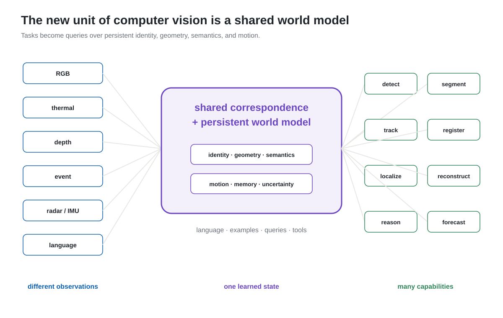
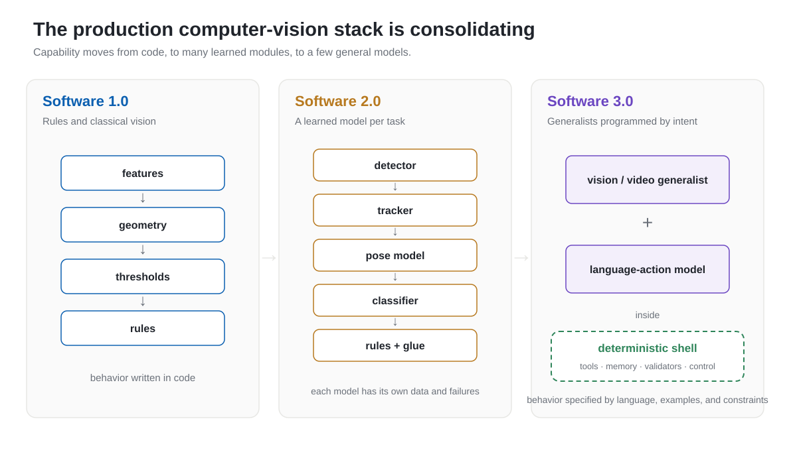
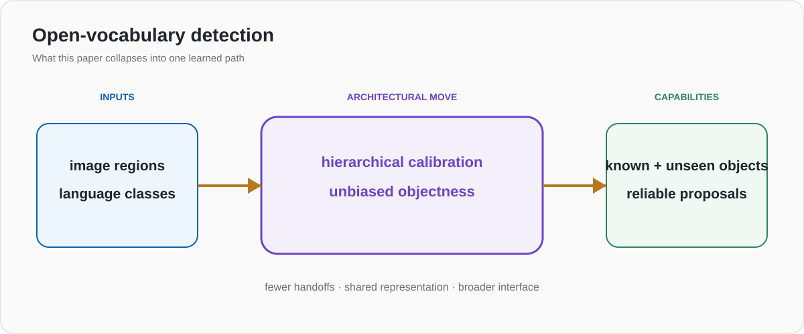
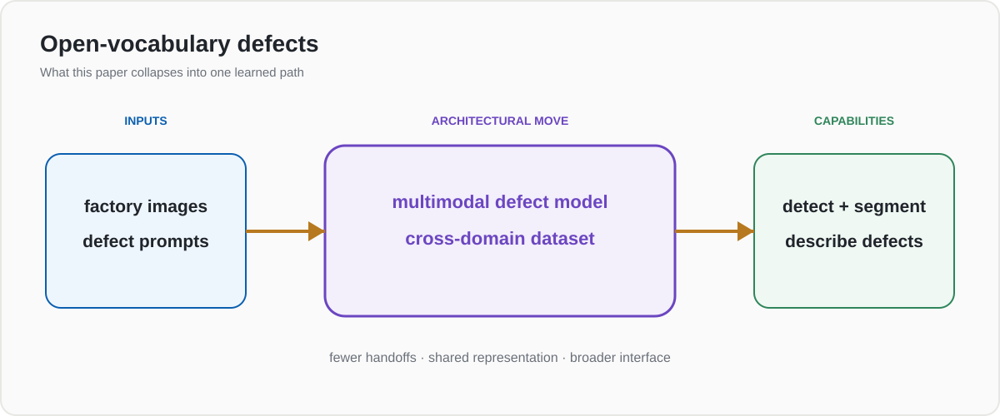
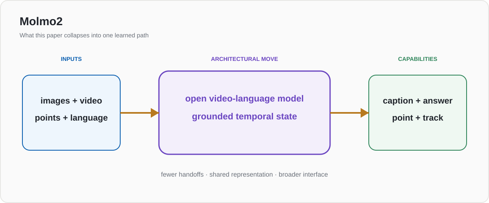
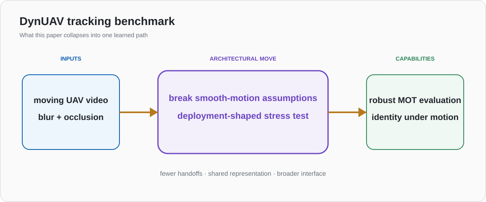
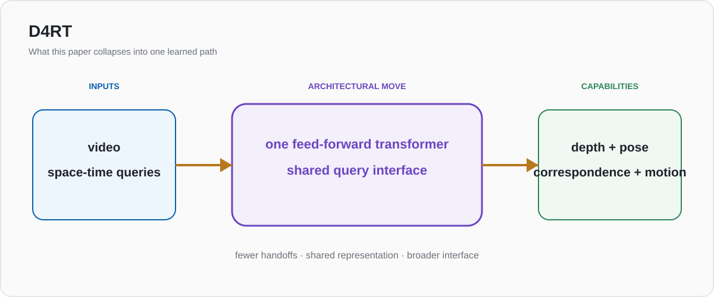
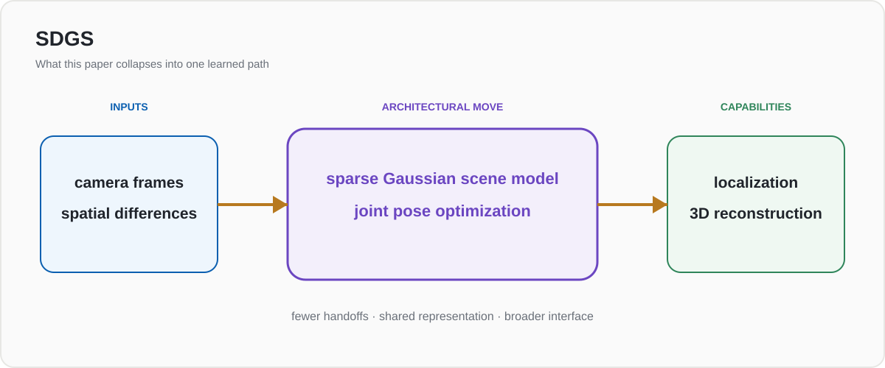
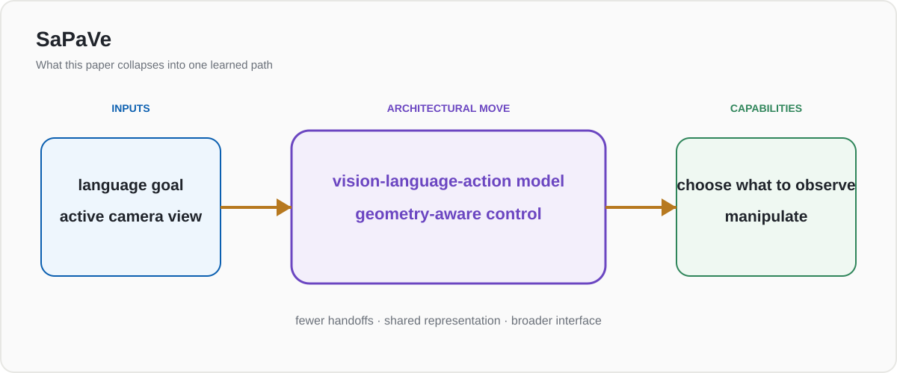
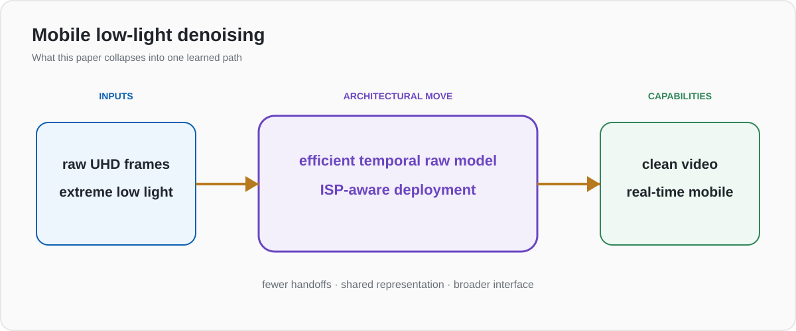

Computer Vision Is Becoming Software 3.0
In the first pass over CVPR 2026, I mapped all 5,010 accepted papers. Then I reviewed 84 of them through a production lens. The strongest pattern was not one task or model family. It was architectural: the classic computer-vision pipeline is collapsing into one or two generalist models.

The pipeline does not disappear because one model learned eight labels. It disappears because one persistent representation can answer eight different questions.
Andrej Karpathy's Software 2.0 described the move from human-written rules to neural networks trained from data. Software 3.0 pushes the interface one level higher: increasingly, we describe the desired behavior in language and examples, and a general model figures out how to perform it.
Computer vision appears to be entering its own version of that transition.
The pipeline we have been building
A traditional production vision system is a chain of specialized components. A simplified video-analytics stack might look like this:
Think: ISP → detector → tracker → pose model → classifier → rules engine → database → reporting.
Some components are classical algorithms, some are learned models, and the rest is glue code. Each model has its own dataset, labels, thresholds, metrics, deployment path, and failure modes. A new class means retraining the detector. A new behavior means training another classifier. A new camera or site means recalibration and adaptation.
This architecture can be reliable, inspectable, and efficient. I have spent much of my career building versions of it. It is also expensive to extend: complexity grows roughly with the number of capabilities.
CVPR 2026 suggests a different stack is taking shape:

The unit of development shifts from code, to individual learned modules, to a few general models surrounded by constraints.
Instead of adding a model for every task, a small number of generalist models detect, segment, track, retrieve, describe, reason, and sometimes act. Language, visual examples, and tool calls become the interfaces for specifying what the system should do.
The clearest CVPR 2026 evidence is not another larger VLM. It is the spread of multitask visual architectures: UETrack uses one model across RGB, thermal, depth, event, and language; AUSM unifies prompted segmentation with detect-and-track-everything; UniCorrn shares weights across 2D–2D, 2D–3D, and 3D–3D matching; and Any4D jointly represents metric geometry and motion while accepting optional RGB-D, IMU, and radar inputs.
Six shortlisted papers per theme, graded by distance from practical deployment. Consolidation is visible, but readiness remains uneven. Download the full 84-paper Markdown appendix .
The class list becomes a prompt
The clearest Software 3.0 signal is open-vocabulary perception. In the old pipeline, the detector's class list is compiled into its weights. Adding a class is a data and training project. In the emerging stack, the class list becomes an input.

Exploring Hierarchical Consistency and Unbiased Objectness for Open-Vocabulary Object Detection
Production grade A · usable now · medium novelty
It improves open-vocabulary detection by addressing unreliable pseudo-labels and proposal networks biased toward known categories. The research step is incremental; the product implication is not.

This is not yet magic. Open-ended recognition is harder to validate than a fixed classifier, and a language prompt is an ambiguous specification. But it changes how a product is extended: more behavior moves from model training into interaction with a general model.
Separate video modules become one temporal model
Video systems traditionally bolt memory onto image models: detect each frame, associate boxes, classify clips, then write rules over the results. Generalist video models are beginning to absorb those boundaries.


Breaking Smooth-Motion Assumptions
Production grade A · near-term · medium novelty
This benchmark is a useful warning about consolidation: a general model still has to survive camera shake, occlusion, scale changes, and non-smooth motion. Broader capability does not remove the need for hard, deployment-shaped evaluation.
The emerging video product is less "detector plus tracker plus event classifier" and more a persistent model that can answer: what happened, where, to which object, and what should I keep watching?
The hidden unifier is correspondence
My first shortlist underweighted the strongest version of this trend. It treated detection, tracking, registration, localization, multiview perception, and multimodal fusion as neighboring product areas. A better reading is that they are increasingly different queries over the same problem: which observation corresponds to which entity, point, place, or state?
| Old pipeline boundary | Collapsing into | Evidence |
|---|---|---|
| RGB tracker · thermal tracker · depth tracker | one sensor-agnostic tracker | UETrack |
| detector · segmenter · mask tracker | one streaming segmentation state | AUSM · VidEoMT |
| 2D matcher · 2D–3D matcher · point-cloud registration | one correspondence model | UniCorrn |
| VIO · map matching · rangefinder target localization | live pixel-to-3D registration | PiLoT |
| cross-view matching · geometry · segmentation | geometry-aligned object correspondence | VGGT-Segmentor |
This is more consequential than simply using a bigger model. A shared correspondence representation lets identity, geometry, and semantics survive changes in camera, sensor, viewpoint, and time. That is the substrate on which the specialized stages can disappear.
Geometry is being absorbed too
The same consolidation is happening in spatial vision. Depth, camera pose, point tracking, reconstruction, and scene representation have historically been separate modules. New models increasingly expose several of them through one representation or query interface.
In that framing, 4D is not merely animated 3D or better rendering. It is a persistent scene state combining geometry and motion, updated from streaming observations and queried for perception tasks. Any4D unifies dense metric geometry and motion across optional sensors; DetAny4D turns open-set detection into persistent streaming 4D perception; and Point4Cast extends the same state from reconstruction into forecasting.

Efficiently Reconstructing Dynamic Scenes One D4RT at a Time
Production grade B · usable now · medium novelty
A unified query-based decoder handles depth, pose, tracking, and dynamic reconstruction. That is exactly the architectural move: several specialized outputs become views into one learned scene model.

SDGS: Spatial Difference Guided Gaussian Splatting
Production grade A · usable now · medium novelty
Faster pose optimization and a sparse spatial representation show that these unified scene models are beginning to address operational constraints, not only rendering quality.
Perception and action become one learned loop
The strongest version of this idea appears in robotics. If the model can understand an instruction, choose what to observe, and act, then the boundary between perception pipeline and application logic starts to disappear.

SaPaVe: Active Perception and Manipulation in Vision-Language Action Models
Production grade A · usable now · medium novelty
The robot does not passively accept the current camera view. It learns to gather the visual information needed to complete the task. The instruction increasingly specifies the goal; the model decides part of the procedure.
This is close to Software 3.0 in the literal sense: natural language becomes a programming interface for a learned system. It is also where the risks become most concrete. Once a model controls something physical, latency, recovery behavior, safety constraints, and verification matter more than an average benchmark score.
One model does not mean no system
It is tempting to extrapolate toward one giant model replacing the entire stack. I do not think that is what robust production systems will look like.
Generalist models are difficult to bound. They can hallucinate, misunderstand an instruction, regress on a capability after adaptation, or fail in ways that are hard to reproduce. Classical geometry, databases, control loops, safety limits, and validation logic remain valuable precisely because their behavior is constrained.

Efficient Real-Time Raw-to-Raw Denoising for Extreme Low-Light Ultra HD Video on Mobile Devices
Production grade A · usable now · medium novelty
This paper is a useful counterweight to the generalist-model story. It targets latency, power, temporal consistency, and integration into an existing ISP. Shipping still means respecting the surrounding system.
The architecture I expect is therefore not one model alone. It is:
surrounded by
a smaller, stricter deterministic shell
The model handles fuzzy perception, language, retrieval, and adaptation. The shell handles permissions, geometry where exactness matters, state, latency budgets, business rules, validation, and safe action. The engineering challenge shifts from connecting many narrow models to constraining and evaluating a few broad ones.
The new work moves to evaluation and data
In the specialized-pipeline world, adding capability often means adding a model. In the generalist-model world, adding capability increasingly means supplying examples, prompts, tools, memory, and feedback.
That does not eliminate engineering. It moves it. The difficult work becomes:
- building deployment-shaped evaluations rather than one benchmark score;
- curating examples and failure cases that specify desired behavior;
- deciding which outputs require deterministic verification;
- measuring latency and cost across a model with many capabilities;
- detecting regressions when the shared model changes;
- keeping the general model on a short leash around irreversible actions.
This may be the most important production trend in CVPR 2026. Computer vision is not simply getting better at more tasks. The unit of development is changing: from a pipeline of individually trained models toward a general visual system that is programmed through intent, examples, and constraints.
Method & caveats. I grouped CVPR 2026 into 14 broad production themes and reviewed the top six papers in each: 84 papers in total. Production grade measures direct usefulness and adaptation cost, not academic quality. I also added a separate architecture-shift shortlist because broad semantic ranking underweights papers whose main contribution crosses several task boundaries. The Software 3.0 framing here is an analogy to the natural-language interface and generalist-model architecture; many reliable vision products will remain hybrid systems. The full graded review and scripts live in the CVPR 2026 repository.